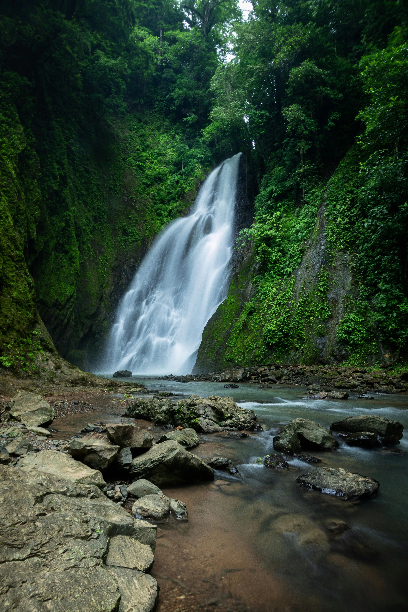
🌿 Selva AméricaCosta Rica
Descubre selvas tropicales, volcanes activos y playas vírgenes mientras apoyas comunidades locales.
Carbono Neutral
Biodiversidad
Cada destino ha sido elegido por su compromiso activo
con el medio ambiente y las comunidades locales.

98% energía renovable · 25% territorio protegido
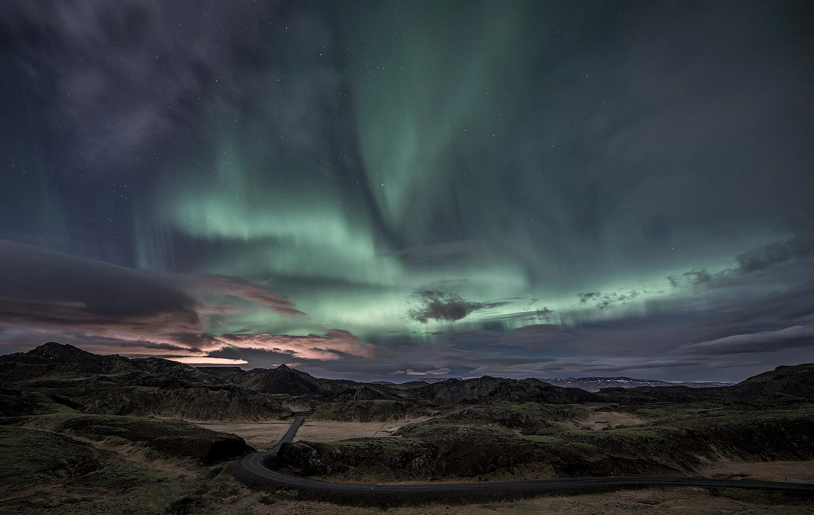
100% energía geotérmica · Turismo controlado
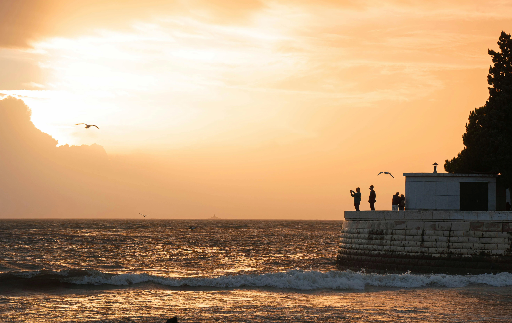
Costas protegidas · Gastronomía local
No se encontraron destinos con ese criterio.

🌿 Selva AméricaDescubre selvas tropicales, volcanes activos y playas vírgenes mientras apoyas comunidades locales.
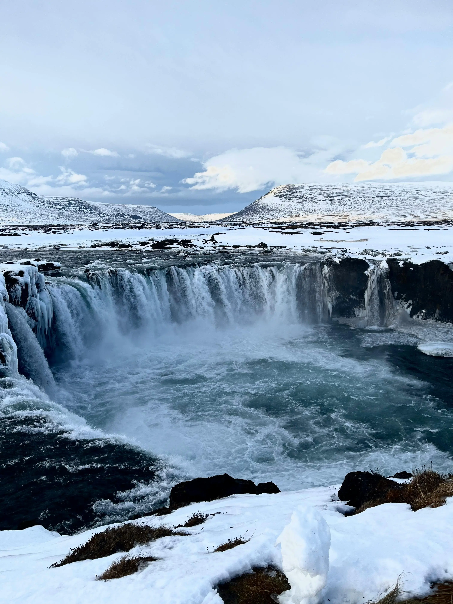
🧊 Glaciares EuropaGlaciares milenarios, géiseres activos y auroras boreales en un país líder en transición energética.
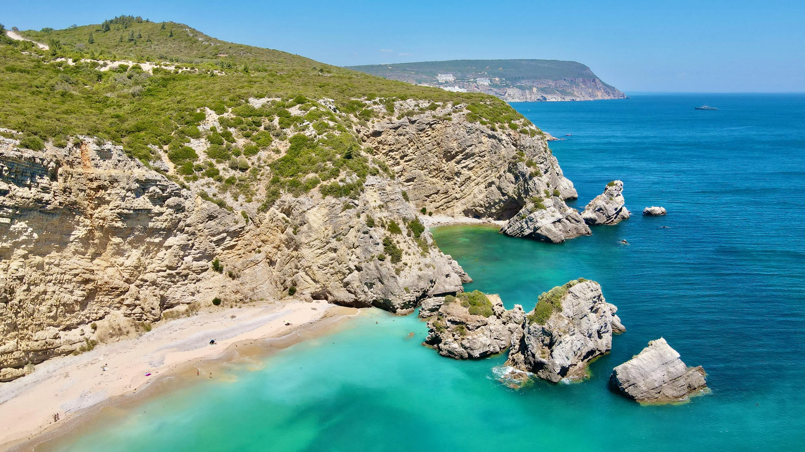
🌊 Costa EuropaPueblos históricos, costas protegidas y gastronomía local en un destino comprometido con la sostenibilidad.
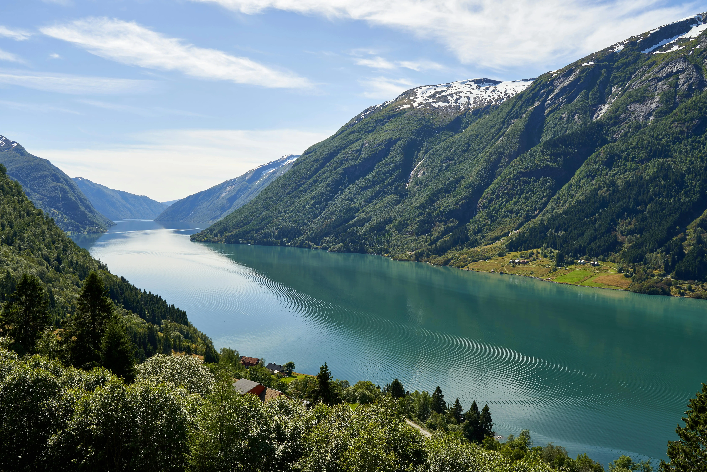
🏔️ Montaña EuropaFiordos espectaculares, auroras boreales y compromiso con la movilidad eléctrica y conservación marina.
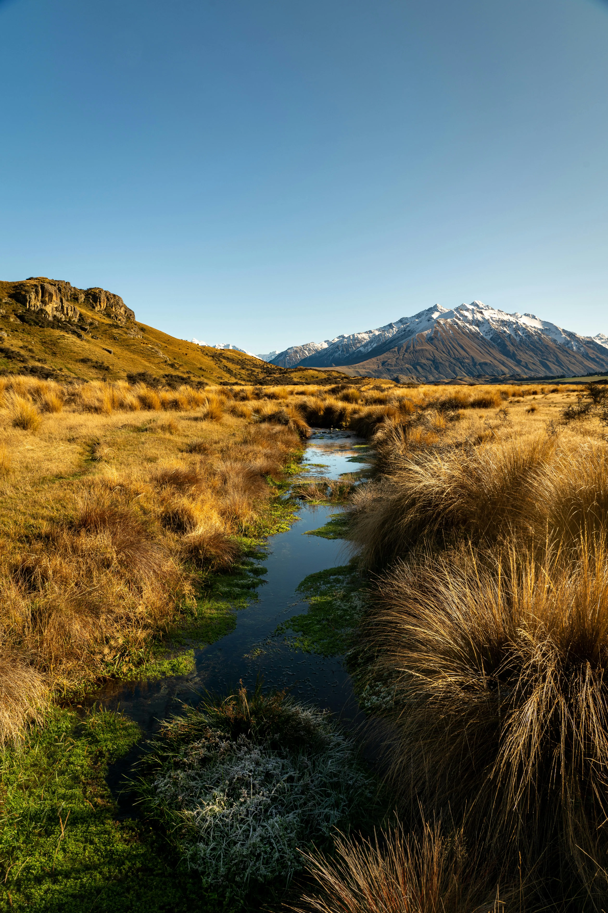
🏔️ Montaña OceaníaConservación de especies únicas, turismo Maorí y paisajes cinematográficos con enfoque ecológico.
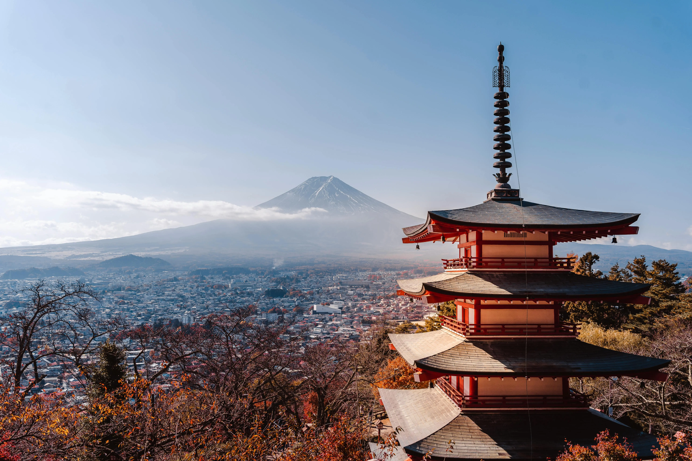
🏯 Cultura AsiaArmonía entre tradición y sostenibilidad, bosques sagrados y gastronomía respetuosa con el entorno.
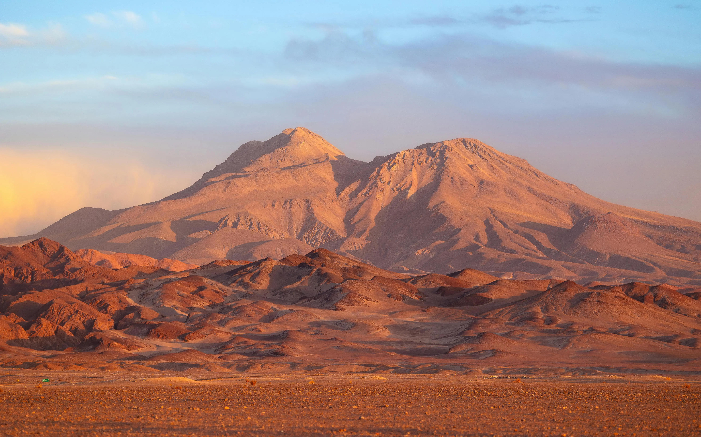
🏔️ Montaña AméricaPatagonia salvaje, desierto de Atacama y comunidades indígenas Mapuche preservando su cultura ancestral.
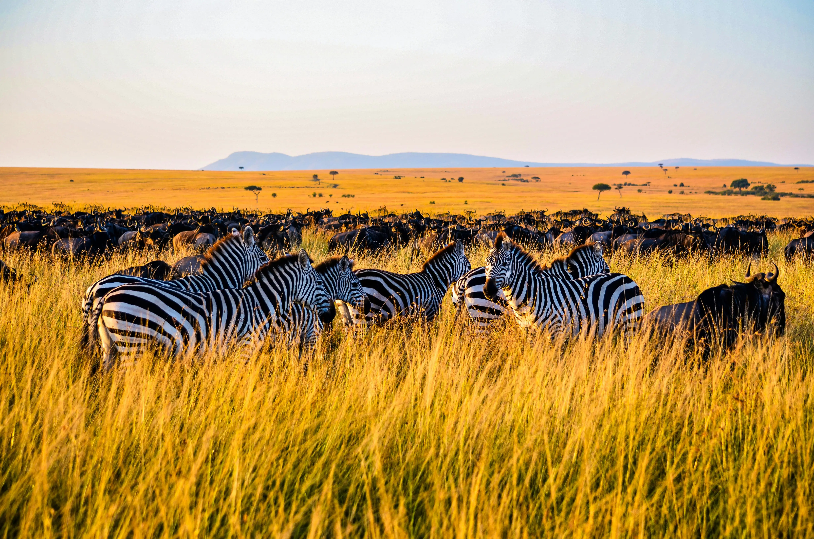
🦁 Safari ÁfricaSafaris éticos, conservación de vida silvestre y apoyo a comunidades Masai en sus tierras ancestrales.
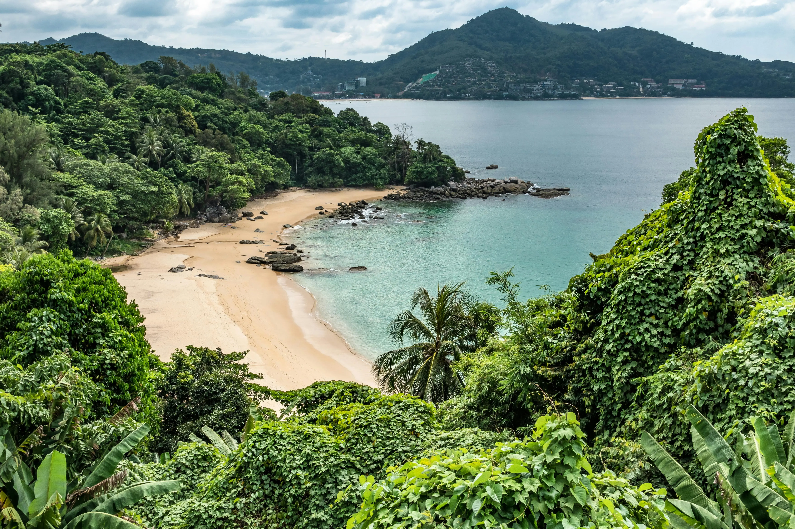
🌊 Costa AsiaPlayas responsables, templos budistas y proyectos de conservación marina en el sudeste asiático.